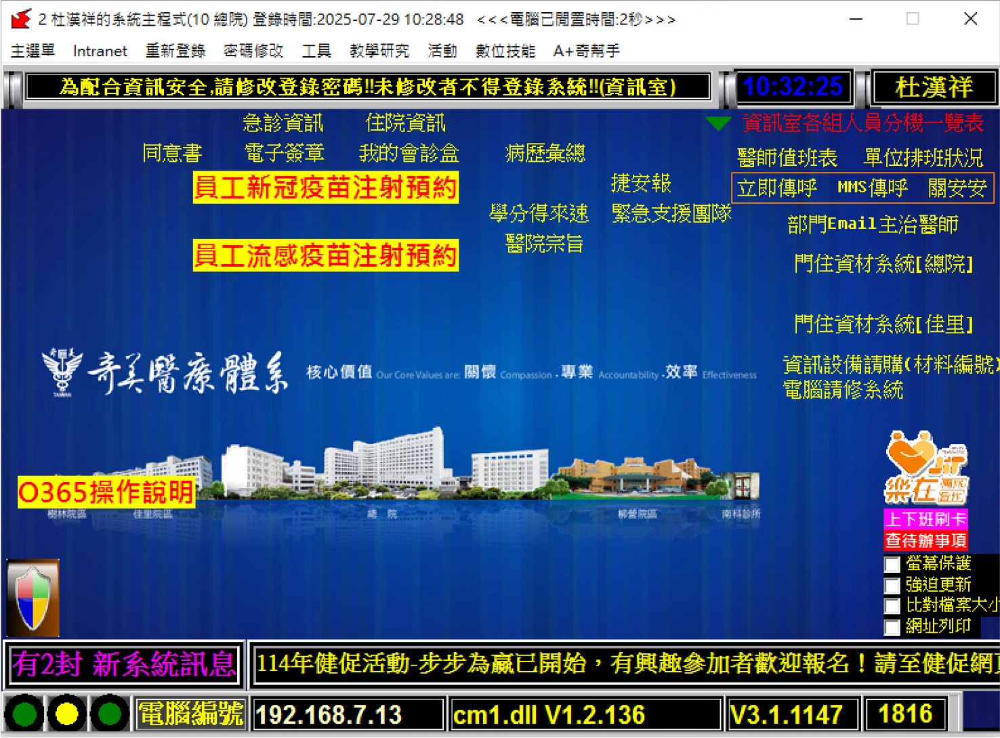

奇美醫院所有醫療作業，包括急診、門診及住院，都透過核心《系統主程式》，輸入人事號及密碼後進行。這個系統功能按鍵相當直觀，讓您輕鬆掌握。
醫院的重要公告、最新消息、活動資訊等，都會在『Intranet』以及《『奇美 Epaper (大聲公)』》上發布。務必定期查閱，掌握第一手資訊。透過 Intranet，您還可以進入：
記得安裝『CMedline+』這個必備 App！它將是您在醫院工作的好夥伴，提供危急值通知、行動查房、醫療照片上傳等實用功能，讓您隨時掌握病人資訊。
請從Intranet系統下拉選單裡點選『CMedLine+安裝』申請安裝。
請注意，每位醫師執行的臨床作業內容不同，因此各系統的詳細操作步驟也會有所差異。 建議您積極向該科部同仁請益，以了解各系統的具體操作細節。 本院電腦全面禁用USB，請多加利用雲端空間做為文件存檔及傳輸。 另外，本院資訊系統還有Wi-Fi、院內信箱、O365系統、主治醫師VM院外連線系統等可供申請，詳請請洽資訊室。